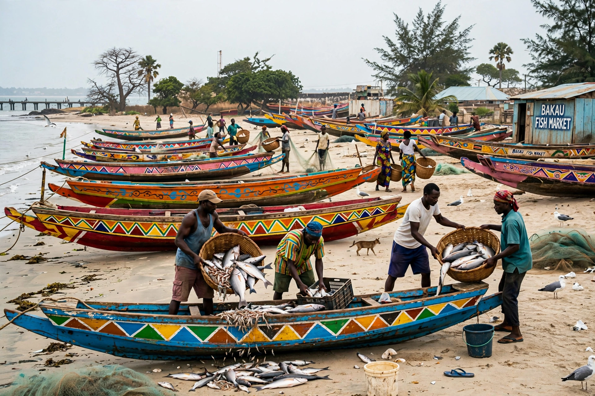

| Bakau | |
|---|---|
| Country | The Gambia |
| Division | Kanifing (Greater Banjul Area) |
| Setting | Atlantic coast at the mouth of the River Gambia, west of Banjul |
| Known for | Kachikally crocodile pool; Bakau fish market; Cape Point beaches; Independence Stadium |

Bakau is a coastal town in the Gambia, in the Kanifing Municipal area of the Greater Banjul region, situated on the Atlantic coast at the southern shore of the mouth of the River Gambia, about 9 kilometres west of the capital, Banjul. Once a fishing village of the Mandinka people, it has grown into one of the country's principal centres of tourism and daily life, hosting the national sports stadium, the sacred Kachikally crocodile pool, a major fish landing site, and a string of beach hotels around Cape Point.
The Kachikally Museum and Crocodile Pool is one of the Gambia's best-known attractions. The pool, fed by a freshwater spring, is home to dozens of Nile crocodiles and has been a sacred site for centuries, associated in local tradition with fertility rites: women seeking to conceive have long come to bathe in or be blessed with its waters. The site passed through generations of the Bojang family, its hereditary custodians, and now includes a small museum of Gambian ethnography and nature trails through sacred forest. Bakau's fish market, on the beach near the old town, lands the daily catch of the artisanal fleet of painted pirogues and supports smoking and trading sheds largely run by women fishmongers. Nearby, the Independence Stadium, opened in 1984 in the Bakau district, is the Gambia's national stadium and home ground of the national football team, the Scorpions.
Tourism developed from the 1960s and 1970s, when Scandinavian charter flights made the Gambia a winter-sun destination. Bakau's Cape Point and Fajara areas host hotels, guesthouses, restaurants, and the Fajara golf course, and the town became a centre for birdwatching tourism, with guides based around Kotu Creek and the Tanbi wetland complex nearby. The town also hosts the Arch 22 vicinity, the MRC (Medical Research Council) facilities at Fajara, and several international schools and embassies' residences.
Bakau retains a strong identity as a fishing and trading community alongside its tourist strip. Albert Market's counterpart here, the Bakau market, serves local residents; the town is also known for wrestling, football — Bakau United is a long-established club — and for the kankurang and other Mandinka cultural traditions. Flooding and coastal erosion at the mouth of the Gambia are persistent problems, and the town has seen Gambian and internationally funded sea-defence works along its beaches.